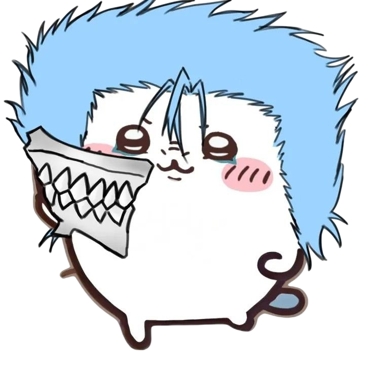

ку, я столен, ака спизженная навайбкодила сайт за 2 дня 💪
TG adapter Tik Tok
Tik Tok

Tik Tok w edits частенько пустует, пушто я лениваяку, я столен, ака спизженная навайбкодила сайт за 2 дня 💪
TG adapter
Tik Tok

Tik Tok w edits частенько пустует, пушто я ленивая